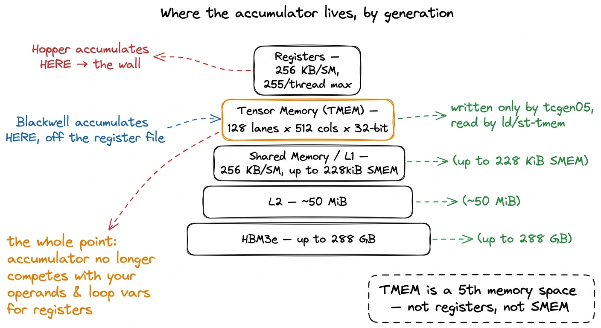
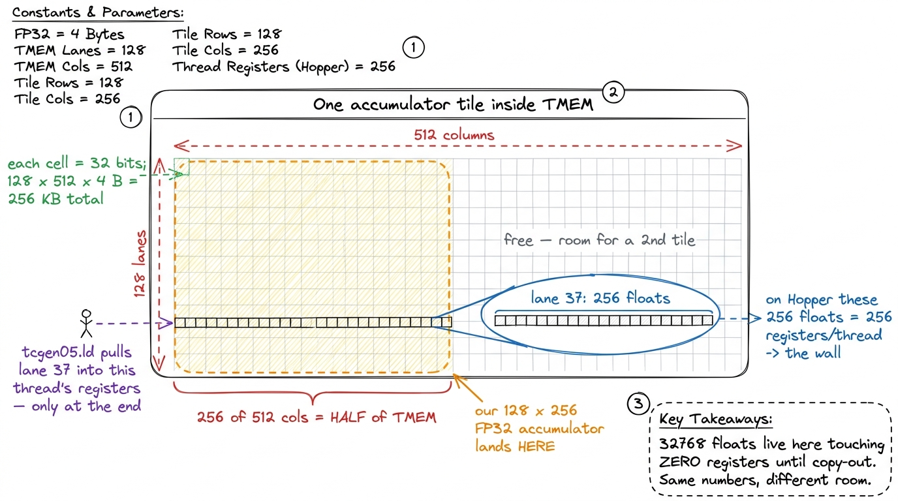
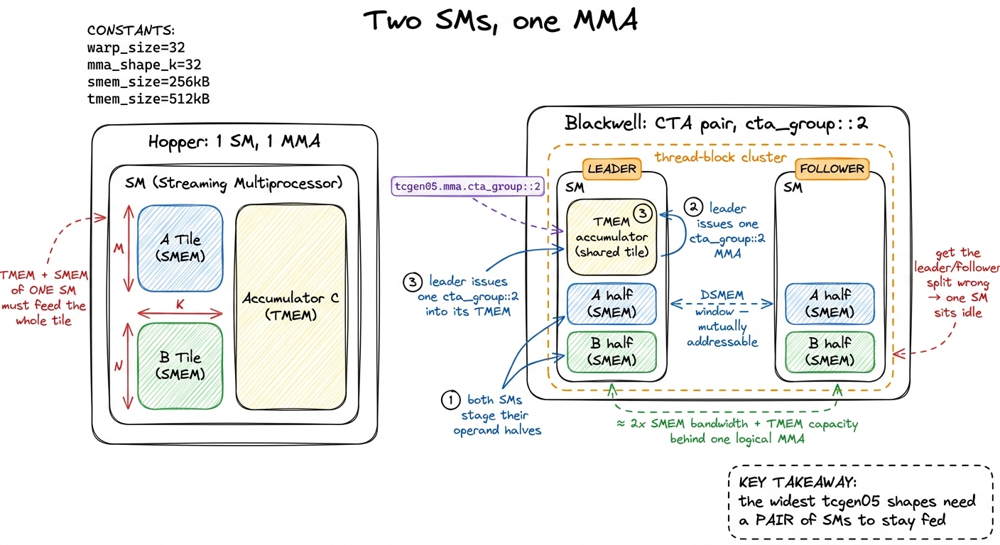
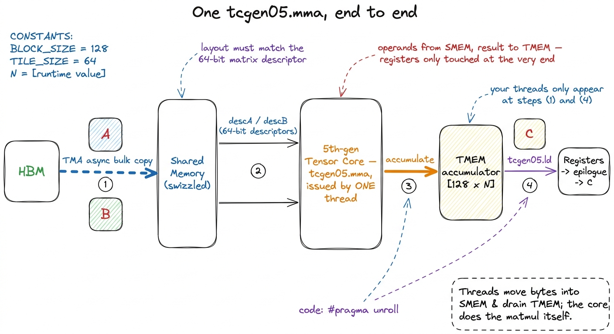
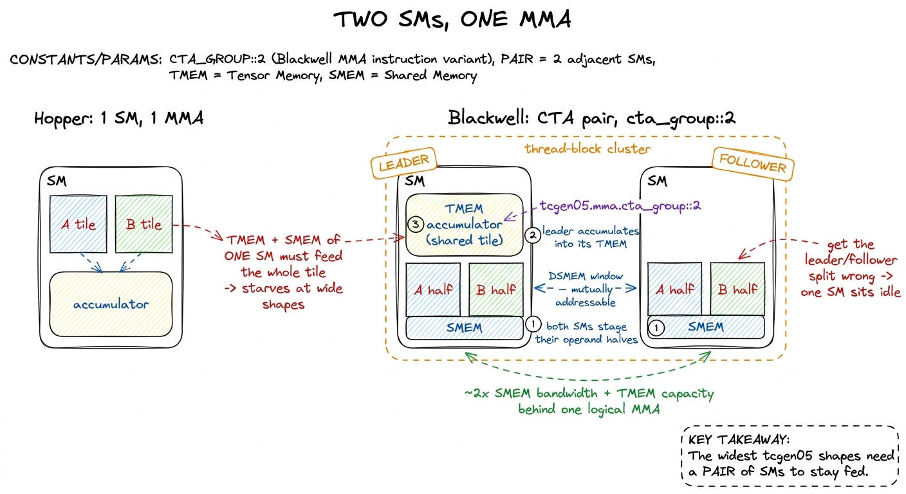
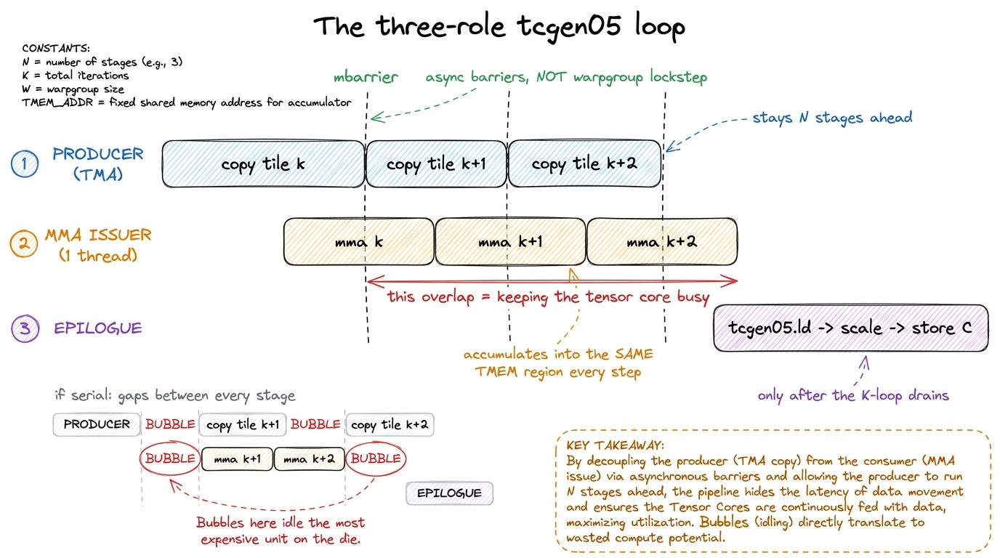
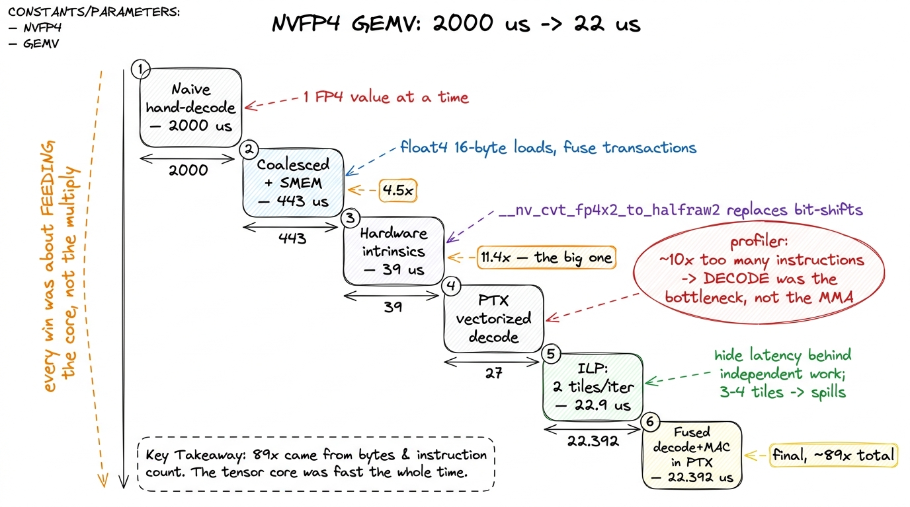

Blackwell: tcgen05 & tensor memory B200
Before we touch a single Blackwell instruction, let me ask the dumbest possible question, because the whole article hangs on it: when a tensor core finishes a matrix multiply, where does the answer go?
You have probably never had to think about this. On every GPU from Volta through Hopper the answer was so obvious it was invisible: the answer goes into your registers — the tiny, ultra-fast private storage each thread owns. You write float acc[8], the tensor core fills it, you read it, you store it. The accumulator is just a variable. That assumption is baked into every GEMM tutorial, every FlashAttention kernel, every line of the GEMM ladder we climbed. Tiling, double-buffering, wgmma on Hopper — all of it quietly assumes the accumulator lives where your threads live.
Blackwell breaks that assumption. And once it breaks, it does not break gently — it takes the rest of your kernel down with it. The first time I moved a working Hopper GEMM onto a B200 I expected a tune-up and got a rewrite. This article is the map of the new machine you land in: what the tcgen05 instruction family is, what Tensor Memory (TMEM) is and why NVIDIA had to invent it, how CTA pairs make two thread blocks cooperate on one multiply, and — the part that actually costs you a week — why every one of these forces you to restructure the whole kernel around them.
The plan is to build it up one surprise at a time. We will start from the register file, watch it become a wall, watch Blackwell knock a hole in the wall, and then follow the consequences until we can read a real production worklog and understand every number in it. Everything below is B200 / GB300 (sm_100a), the Blackwell data-center parts.1 "Blackwell" covers a range of dies. The GB300 / B200 data-center chips are sm_100; the consumer RTX 50-series is a different sm_120 variant with the same programming model but different resource sizes. Everything here targets sm_100a — the a suffix, as on Hopper's sm_90a, means "architecture-specific, no forward-compat guarantee". A kernel compiled for sm_100a will refuse to run on anything else.
Where the answer used to go: the register file, and how it became a wall
Let me make the register file concrete, because you cannot feel the wall until you feel how small the room is.
A Streaming Multiprocessor (SM) — the independent little processor a GPU has dozens of — has a register file of 256 KB. That is 65536 registers of 32 bits each, and they are shared among every thread resident on the SM. Crucially, one thread can address at most 255 of them. That 255 is a hard architectural ceiling. Go over it and the compiler spills the overflow to slow local memory, which is exactly the disaster you were trying to avoid.
Now do the arithmetic that every Hopper GEMM author eventually runs into. Suppose the tensor core is accumulating a 128 × 256 tile of FP32 results — a perfectly ordinary output tile. That is 128 × 256 = 32768 floats. On Hopper the wgmma instruction is issued by a warpgroup: four warps, 128 threads, working together and each holding a slice of the accumulator in its own registers. Split 32768 floats across 128 threads and you get:
$$\frac{32768 \text{ floats}}{128 \text{ threads}} = 256 \text{ registers per thread, just for the accumulator.}$$
That is already over the 255 limit — and we have not counted a single operand, loop index, address, or pipelining variable. The accumulator alone busts the budget.2 You can of course pick smaller output tiles so the accumulator fits — and Hopper kernels do exactly that. But smaller tiles mean less data reuse per trip to memory, which is the arithmetic-intensity tradeoff from the roofline model. The register file wasn't a soft suggestion; it was actively shrinking the tiles you were allowed to use, right when the tensor cores were getting fast enough to want bigger ones.
This is the squeeze that produced Blackwell. Each GPU generation adds tensor-core throughput faster than it adds memory bandwidth (the classic story) — but also faster than it adds register-file capacity. The register file stayed at 256 KB. The math units got dramatically faster. So you arrive at an absurd situation: you can build a tensor core that computes answers faster than ever, and you have nowhere to put the answers.

figure rendering · The register file stopped scaling with tensor-core throughput. A largeHold that picture — the thread in the room with the ceiling too low. Everything Blackwell does is a response to it.
Blackwell's move: give the answer its own room
If the accumulator does not fit in the registers, and you cannot make the registers bigger without redesigning the whole SM, there is only one structural fix left. Give the accumulator its own memory. A new, separate room whose entire purpose is to hold tensor-core operands and results, so they stop competing with your threads' variables.
That new room is Tensor Memory (TMEM). It is a dedicated 256 KB per-SM scratchpad, and — this is the part to burn in — it is physically a third thing. Your SM now has three separate SRAM structures of 256 KB each: the register file, the shared-memory/L1 block, and TMEM. Do not add them up expecting a 768 KB pool. They are three distinct rooms with three distinct doors.
TMEM is addressed as a 2-D grid: 128 lanes by 512 columns of 32 bits each. Check the arithmetic — 128 × 512 × 4 bytes = 256 KB. That geometry is not arbitrary. It mirrors the shape the tcgen05 MMA wants to write, so the tensor core can stream a result tile straight into TMEM at full rate with no transpose and no reshuffling. The memory was designed backward from the multiply.
Let me zoom all the way in on that grid, because the shape only makes sense once you place a real tile inside it. Take our old 128 × 256 FP32 accumulator — the exact tile that busted the register budget on Hopper. In TMEM it lands cleanly: the 128 rows map one-to-one onto the 128 lanes, and the 256 result columns occupy 256 of the 512 columns. So one accumulator tile eats 256 / 512 = half of the SM's TMEM, and you could hold a second one alongside it. Count the storage the same tile needed before: 128 × 256 = 32768 floats, which on Hopper meant 256 registers per thread. In TMEM those same 32768 floats sit off to the side in 128 lanes × 256 cols, touching zero registers until you copy them out. Same numbers, different room — that is the whole trick, made concrete.3 The 128 lanes are not a coincidence with the 128 threads of a warpgroup — the lane dimension is deliberately warpgroup-shaped so that when you do copy the tile out with tcgen05.ld, each of the 128 threads pulls its own lane's slice in parallel. The read-out is itself a coalesced, warpgroup-wide operation.

figure rendering · Zooming into the 128-lane x 512-column TMEM grid. A 128x256 FP32 accum
figure rendering · Blackwell adds a new tier between the tensor core and everything else.Now, the property that reorganizes your entire kernel — and the first thing that genuinely surprised me. Your threads cannot treat TMEM as ordinary memory. There is no pointer you dereference. There is no float acc = tmem[i]. You cannot loop over it. TMEM is written only by the tensor core, and it can only be read back into registers through explicit copy instructions. It is a walled garden that the tensor core tends and you visit through a specific gate:
// You do not "declare" a TMEM accumulator; you allocate a region of it.
uint32_t tmem_addr; // an opaque lane:col handle, NOT a pointer
tcgen05.alloc.b32 [&tmem_addr], nCols; // reserve nCols columns of TMEM
// The MMA accumulates INTO that region, reading its operands from SMEM:
tcgen05.mma.cta_group::2.kind::f16
[tmem_addr], descA, descB, idesc, /*accumulate=*/1;
// To touch the result at all, you must COPY it out to registers:
tcgen05.ld.sync.aligned.32x32b.x128.b32 {r0, r1, ...}, [tmem_addr];
tcgen05.dealloc.b32 tmem_addr, nCols; // and you MUST free itThree things there are worth staring at until they feel strange.
First, tmem_addr is an opaque handle, not an address. It is a packed lane/column coordinate the allocator hands you. You cannot do pointer arithmetic on it; tmem_addr + 4 is meaningless. The hardware, not you, decides what the bits mean.
Second, and this is the payoff — during the entire MMA K-loop, the accumulator is never in registers. It lives in TMEM the whole time. So the register pressure that capped Hopper accumulators simply vanishes. Remember the thread whose accumulator poked through the ceiling? On Blackwell that stack of floats is in a different room entirely. Your 255 registers are now free for operands, indices, addresses, and pipelining state. We knocked the ceiling problem down by moving the furniture out of the room.
Third, tcgen05.alloc and tcgen05.dealloc are real allocation calls against a tiny fixed pool. This is not a formality. Forget the dealloc and the next kernel that needs TMEM stalls or fails outright.4 TMEM allocation is coarse and column-granular, and the pool is per-SM. Allocation is done by a single warp on behalf of the whole block. In practice you allocate your accumulator region once at kernel start and free it once at the end — treating it like malloc/free inside the inner loop is a great way to accidentally serialize your SM while it waits for columns to free up.
tcgen05: a whole tile from a single thread
So the answer has a new home. The next surprise is who issues the multiply, and it runs in exactly the opposite direction from what you'd guess.
On Hopper, wgmma was a warpgroup instruction. All 128 threads of four warps issued it collectively, each contributing its slice of registers. It was a team lift. tcgen05.mma is the opposite: it is issued by a single thread. One thread points the tensor core at a descriptor for operand A, a descriptor for operand B, and a TMEM accumulator handle — and the hardware does the entire tile on its own.
Stop and notice how odd that is. We are used to "more parallelism = more threads doing work." Here the trend reverses: the instruction got more powerful and fewer threads issue it. Why would NVIDIA do that? Because the tile got so large that coordinating 128 threads to co-issue it was pure overhead. It is cleaner to let one thread say "go" and have the tensor core walk the operands itself.
But — and here is the catch that defines the rest of the article — that simplification at the issue site pushes all the difficulty into the feeding site. If one instruction now consumes an enormous tile, where do the operands come from? They cannot come from registers; there aren't enough. They come from shared memory, and the tensor core is told where to find them by a 64-bit matrix descriptor — a compact code that packs the SMEM base address, the leading dimension, and the swizzle pattern. The tensor core reads SMEM directly, walking it according to the descriptor.
So your threads' job just shrank and changed. They no longer compute the matmul. They are a delivery crew. Their entire job is: get the right bytes into shared memory, in the exact swizzled layout the descriptor expects, staged far enough ahead that the tensor core never waits. That is the whole game on Blackwell. This is why the asynchronous copy engine — Hopper's TMA — matters more here than anywhere else: it is the machine that feeds the beast.

figure rendering · The Blackwell MMA pipeline end to end. Threads stage operands into shaLook at that figure and count where your threads actually appear: steps (1) and (4). The middle — the multiply itself — is autonomous. On Hopper your threads lived in the middle. On Blackwell they have been evicted to the edges.
CTA pairs: two thread blocks, one multiply
The third change has no Hopper analogue at all, and it is the one that most bends your intuition. Blackwell can pair two adjacent SMs so they cooperate on a single multiply.
First, vocabulary, from scratch. A CTA (Cooperative Thread Array) is just NVIDIA's formal name for a thread block — the group of threads you launch together that shares a shared-memory region. A cluster, introduced on Hopper, is a small group of CTAs (blocks) placed on nearby SMs that can see into each other's shared memory through a fabric called distributed shared memory (DSMEM). Keep those two ideas — block and cluster — because Blackwell builds directly on them.
You already saw the syntax: tcgen05.mma.cta_group::2. That cta_group::2 means "this one MMA spans a CTA pair — two blocks." Two SMs, two shared memories, one logical multiply.
Why on earth would you want that? It is the register/TMEM economics from the top of the article, scaled up one more level. The largest, most efficient tcgen05 tile shapes are wider than a single SM's TMEM and SMEM can comfortably supply. One SM simply cannot hold enough operand data and accumulator to feed the widest multiply without starving. So Blackwell lets a pair of SMs pool their resources behind one instruction. Each SM stages half the operands into its own shared memory; the two halves are mutually visible across the pair through the DSMEM window; one SM (the leader) holds the shared accumulator in its TMEM and issues the MMA.5 The CTA-pair mechanism reuses Hopper's thread-block-cluster and DSMEM machinery — the two SMs must be in the same cluster so their shared-memory windows are mutually addressable. Blackwell adds the tensor-core-level cooperation on top; you still launch with a cluster dimension exactly the way you would for an sm_90a clustered kernel. The pairing is fixed by SM adjacency, not chosen at runtime.
The result: roughly two SMs' worth of shared-memory bandwidth and TMEM capacity stand behind one logical tensor-core operation. That is how Blackwell keeps the 5th-gen core fed at shapes that would starve a lone SM.

figure rendering · CTA pairs have no Hopper analogue. Two SMs in one cluster co-own a sinFor you, the kernel author, this changes the unit of tiling. The tiling you learned for a single SM is now a tiling across a pair of SMs. Your block-tile is co-owned. And the leader/follower asymmetry — who allocates the accumulator, who issues the MMA, who drains TMEM at the end — is something you now design explicitly. Get it wrong and the symptom is brutal and specific: one SM in every pair sits idle, and you silently lose half your throughput while the profiler shows "full occupancy."
Putting it together: the kernel doesn't port, it inverts
Now step back and hold all three changes at once — accumulator in TMEM, multiply issued by one thread, tile co-owned by a pair — and look at what happens to the shape of the kernel.
On Hopper the mental model was: threads own the accumulator and grind the K-loop. The threads are the protagonists. They load a tile, they multiply-accumulate into their registers, they loop over K, they write out. Everything centers on the threads doing math.
On Blackwell the mental model inverts to: threads are a memory-movement crew servicing an autonomous tensor core. The tensor core is the protagonist now; the threads exist to keep it fed and to drain its output. And because the core is autonomous and fast, the kernel becomes a pipeline with three roles running concurrently:
- Producer — a warp (often a dedicated "DMA warp") that issues TMA async copies to keep the next
A/Btiles landing in SMEM, several stages ahead of where the multiply currently is. - MMA issuer — the single thread firing
tcgen05.mmain a loop, each iteration accumulating one K-step into the same TMEM region, but only after the producer signals that the tile it needs is ready. - Epilogue / consumer — warps that, once the K-loop drains, run
tcgen05.ldto pull the finished accumulator out of TMEM, apply scales and activation, and writeCto memory.
These three do not march in lockstep the way a warpgroup did. They are decoupled and coordinated by asynchronous barriers — mbarrier objects — so the producer can run ahead while the issuer catches up and the epilogue waits its turn. This is the same warp specialization idea Hopper introduced with wgmma, but on Blackwell it is not a nice-to-have optimization. It is mandatory.
Why mandatory? Because the tensor core is now so fast that any bubble in front of it — a late SMEM tile, an epilogue that reads TMEM a hair too early and races the accumulation — idles a unit that represents a huge fraction of the entire die's throughput. On Hopper a small stall wasted a fast unit. On Blackwell a small stall wastes the fastest thing NVIDIA ships.6 I'm deliberately not quoting a single peak-TFLOP number for B200 the way we quote 989 TFLOP/s BF16 for H100. Blackwell's headline figures are usually cited at FP4 with sparsity, which is not the regime you actually hit in a dense GEMM. The honest statement: per-SM dense tensor throughput is a large multiple of Hopper's, and the entire tcgen05/TMEM/CTA-pair design exists so that software can reach it. See what changed across A100/H100/B200 for the generation-over-generation picture.

figure rendering · The kernel becomes a software pipeline. A producer warp streams tilesA worked example: reading a real NVFP4 worklog
Abstract claims are easy to nod along to. Let me ground every one of them in a real, public optimization journey, because the numbers make the lesson unarguable.
The task in Yue Zhang's Blackwell hackathon writeup was a batched NVFP4 GEMV: matrix a of shape M × K × L and a vector-like b of 1 × K × L, both stored as NVFP4 — a 4-bit float in e2m1 form (1 sign, 2 exponent, 1 mantissa bit) — accompanied by FP8 (e4m3) scale factors of shape M × (K/16) × L. That (K/16) is the tell: 16 FP4 elements share one scale factor. This is microscaling, and it is the whole reason 4-bit is usable at all — the raw e2m1 values carry almost no dynamic range, so a shared block scale restores it. We cover the format itself in NVFP4 microscaling; here we care about what it does to the kernel.7 NVFP4 stacks two levels of scaling: a block of 16 e2m1 values shares one e4m3 scale, and there is typically a second, coarser per-tensor FP32 scale on top. Staging those scale tiles correctly alongside the operands is a real part of the kernel's SMEM budget — every operand tile now arrives with a companion scale tile, and if you load the scales badly you stall the multiply just as surely as if you'd loaded the operands badly.
Here is the climb the author reported, and I want you to read it as evidence for everything above:
- Naive, hand-rolled bit manipulation:
~2000 μs. Every thread decodes FP4 by hand, one value at a time. - Coalesced loads + shared memory:
443 μs. A4.5×jump purely from how the bytes move — vectorizedfloat4(16-byte) loads so a warp's memory requests fuse into few transactions. Notice: no math changed. Only the delivery crew got organized. This is the memory coalescing lesson, unchanged since Kernel 2. - Hardware intrinsics:
39 μs. This is the big one — an11.4×leap — and it came from replacing the manual bit-shifting decode with__nv_cvt_fp4x2_to_halfraw2(and__nv_cvt_fp8_to_halfrawfor the scales). Why so huge? The author profiled and found the CUDA version was issuing ~10× more instructions than a reference. The multiply was never the bottleneck. The decode was. The tensor core was starving while the threads ground through bit manipulation. - PTX-level vectorized decode:
27 μs. - Instruction-level parallelism, 2 tiles per iteration:
22.9 μs. Processing two K-tiles per loop iteration to hide memory latency behind independent work. Three or four tiles made it worse — likely register spills, the wall again, in miniature. - Fused decode + multiply-accumulate in PTX:
22.392 μs. The final submission — about89×faster than the naive start.

figure rendering · The reported NVFP4 optimization staircase. Almost every large win cameRead that staircase again with the article's thesis in hand. Not one of those 89× came from making the matrix multiply faster. Every single win — coalescing, intrinsics, PTX, ILP, fusion — is about feeding the core: moving fewer bytes, decoding them in fewer instructions, and hiding latency so the tensor core never waits. The profiler's decisive clue was an instruction count, not a FLOP count. That is the Blackwell world in one dataset.
There is even a lovely counterintuitive detail buried in it: the author removed shared memory for the b tile late in the process because direct loads proved faster — the synchronization overhead of staging through SMEM exceeded its benefit for that operand.8 This is the honest caveat to "always stage through shared memory." Shared memory pays off when it enables reuse — many multiplies reading the same staged tile, as in a real GEMM. For a GEMV where b is read essentially once, the __syncthreads and the extra copy can cost more than they save. The rule was never "SMEM good"; it was "arrange for reuse, and only stage what gets reused." See shared memory & L1.
The through-line
Zoom all the way out, and Blackwell is not a new lesson. It is the oldest lesson on this site, pushed to its logical extreme.
Kernel 1 was memory-bound because every thread re-read HBM. We spent the whole GEMM ladder learning to feed the compute units better: tile for reuse, stage in shared memory, coalesce, vectorize, overlap. Blackwell is memory-bound in a subtler, more total way. The compute unit got so fast that the entire kernel — SMEM staging, TMEM allocation, CTA-pair coordination, scale handling, decode intrinsics — exists for one purpose: to prevent a single bubble in front of it.
tcgen05 moved the accumulator out of your registers and into TMEM, so the multiply could get big without busting the register file. The single-thread issue model shrank your threads' job to delivery. The CTA pair pooled two SMs behind one instruction so the widest shapes stay fed. And NVFP4 quartered the bytes so a core this fast could stay on the compute side of the ridge point. Put together, they turn the kernel author from someone who computes into someone who choreographs — a stage manager for an autonomous machine that does the actual math itself.
The next article puts a profiler on one of these pipelines and asks the question we have asked since the very first kernel — what is it waiting on? — because on Blackwell, as that 2000 → 22 μs staircase proves, the answer is almost never the math.